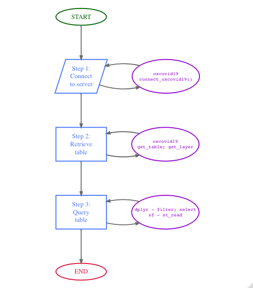

The primary use case for the oxcovid19 package is for facilitating a simplified, R-based workflow for 1) connecting to the OxCOVID19 PostgreSQL server; 2) accessing table/s available from the PostgreSQL server; and, 3) querying the PostgreSQL server with specific parameters to customise table/s output for intended use. This workflow is illustrated in the workflow diagram below:

The following code demonstrates how this workflow can be implemented in R:
library(oxcovid19) #> #> ___ ____ ___ __ __ ___ ____ _ ___ #> / _ \ __ __ / ___|/ _ \\ \ / /|_ _|| _ \ / | / _ \ #> | | | |\ \/ /| | | | | |\ \ / / | | | | | || || (_) | #> | |_| | > < | |___| |_| | \ V / | | | |_| || | \__, | #> \___/ /_/\_\ \____|\___/ \_/ |___||____/ |_| /_/ #> ___ _ _ #> | _ \ __ _ | |_ __ _ | |__ __ _ ___ ___ #> | | | | / _` || __|/ _` || '_ \ / _` |/ __| / _ \ #> | |_| || (_| || |_| (_| || |_) || (_| |\__ \| __/ #> |____/ \__,_| \__|\__,_||_.__/ \__,_||___/ \___| #> #> The OxCOVID19 Database makes use of several datasets. If you #> use any of the data provided by this package, please include #> the appropriate citation as described at the following #> website: #> #> https://covid19.eng.ox.ac.uk/data_sources.html ## Step 1: Create a connection to OxCOVID19 PostgreSQL server con <- connect_oxcovid19() ## Step 2: Access epidemiology table from OxCOVID19 PostgreSQL server epi_tab <- get_table(con = con, tbl_name = "epidemiology") ## Step 3: Query the epidemiology table to show data for Great Britain gbr_epi_tab <- dplyr::filter(.data = epi_tab, countrycode == "GBR")
Step 1 and Step 2 above are facilitated by the connect_oxcovid19 and the get_table functions provided by the oxcovid19 package. These functions are basically low-level wrappers to functions in the DBI and RPostgres packages applied specifically to work with the OxCOVID19 PostgreSQL. These functions facilitate convenient access to the server for general R users without having to learn to use the DBI and RPostgres packages.
Step 3, on the other hand, is facilitated by the dplyr package functions which were designed to work with different types of tables including those from various database server connections such as PostgreSQL.
The output of the workflow shown above is:
#> # Source: lazy query [?? x 15]
#> # Database: postgres [covid19@covid19db.org:5432/covid19]
#> source date country countrycode adm_area_1 adm_area_2 adm_area_3 tested
#> <chr> <date> <chr> <chr> <chr> <chr> <chr> <int>
#> 1 GBR_P… 2020-03-21 United… GBR England Blackpool Blackpool NA
#> 2 GBR_P… 2020-03-20 United… GBR England Derbyshire North Eas… NA
#> 3 GBR_P… 2020-03-20 United… GBR England Cambridge… South Cam… NA
#> 4 GBR_P… 2020-03-20 United… GBR England Cambridge… Huntingdo… NA
#> 5 GBR_P… 2020-03-20 United… GBR England Central B… Central B… NA
#> 6 GBR_P… 2020-03-20 United… GBR England Shropshire Shropshire NA
#> 7 GBR_P… 2020-03-20 United… GBR England Wiltshire Wiltshire NA
#> 8 GBR_P… 2020-03-20 United… GBR England Cheshire … Cheshire … NA
#> 9 GBR_P… 2020-03-20 United… GBR England Durham Durham NA
#> 10 GBR_P… 2020-03-20 United… GBR England Isle of W… Isle of W… NA
#> # … with more rows, and 7 more variables: confirmed <int>, recovered <int>,
#> # dead <int>, hospitalised <int>, hospitalised_icu <int>, quarantined <int>,
#> # gid <chr>The oxcovid19 package functions are also designed to allow pipe operations using the magrittr package. The workflow above can be done using piped operations as follows:
## Load magrittr to use pipe operator %>% library(magrittr) connect_oxcovid19() %>% get_table(tbl_name = "epidemiology") %>% dplyr::filter(countrycode == "GBR") #> # Source: lazy query [?? x 15] #> # Database: postgres [covid19@covid19db.org:5432/covid19] #> source date country countrycode adm_area_1 adm_area_2 adm_area_3 tested #> <chr> <date> <chr> <chr> <chr> <chr> <chr> <int> #> 1 GBR_P… 2020-03-21 United… GBR England Blackpool Blackpool NA #> 2 GBR_P… 2020-03-20 United… GBR England Derbyshire North Eas… NA #> 3 GBR_P… 2020-03-20 United… GBR England Cambridge… South Cam… NA #> 4 GBR_P… 2020-03-20 United… GBR England Cambridge… Huntingdo… NA #> 5 GBR_P… 2020-03-20 United… GBR England Central B… Central B… NA #> 6 GBR_P… 2020-03-20 United… GBR England Shropshire Shropshire NA #> 7 GBR_P… 2020-03-20 United… GBR England Wiltshire Wiltshire NA #> 8 GBR_P… 2020-03-20 United… GBR England Cheshire … Cheshire … NA #> 9 GBR_P… 2020-03-20 United… GBR England Durham Durham NA #> 10 GBR_P… 2020-03-20 United… GBR England Isle of W… Isle of W… NA #> # … with more rows, and 7 more variables: confirmed <int>, recovered <int>, #> # dead <int>, hospitalised <int>, hospitalised_icu <int>, quarantined <int>, #> # gid <chr>
The workflow using the piped workflow outputs the same result as the earlier workflow but with a much streamlined use of code.